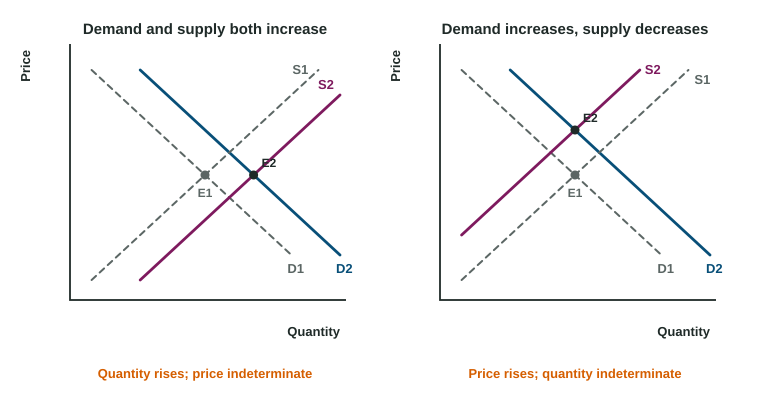

A toy goes viral in November. By December the shelves are empty, parents line up at dawn and resellers ask double the price online. By February the stores have restocked and the price has settled. A market out of balance does not stay that way: the price keeps moving until the quantity buyers want and the quantity sellers offer are equal again.
Shortage and surplus

At any price other than the equilibrium price, the market is in disequilibrium.
- Below equilibrium, quantity demanded is greater than quantity supplied: a shortage (excess demand) equal to Qd minus Qs. Buyers compete for too few units, sellers find they can charge more, and the price rises. As it does, buyers move up along demand (wanting less) and sellers move up along supply (offering more) until the gap closes.
- Above equilibrium, quantity supplied is greater than quantity demanded: a surplus (excess supply) equal to Qs minus Qd. Unsold goods pile up, sellers cut prices, and the price falls until the market clears.
Neither curve moves while this happens. Compare quantities: write "quantity supplied exceeds quantity demanded", never that one curve is bigger than the other. This surplus of goods is a different idea from consumer and producer surplus, which are gains from trade.
Worked example: gaps in the helmet market. In Dunmore, an invented city, helmets demanded and supplied per week are (invented data): at $30, 70 and 40; at $40, 60 and 60; at $50, 50 and 80; at $60, 40 and 100.
- Equilibrium: $40 and 60 helmets.
- At $30: a shortage of helmets; the price rises.
- At $60: a surplus of helmets; the price falls.
- Demand rises by 30 at each price. New quantities demanded at $40 and $50 are 90 and 80. At $50, 80 are demanded and 80 supplied: the new equilibrium is $50 and 80 helmets.
Subtract the smaller quantity from the larger. Adding them, or reporting one quantity, misses the gap.
One curve shifts
When one curve shifts, the equilibrium slides along the curve that stayed put. Draw it as readers score it: label both axes (Price, Quantity), keep the old curve (D1 or S1), draw the new one (D2 or S2) with an arrow, and mark both equilibria with dashed lines to the axes (P1, P2, Q1, Q2).
| Change | Equilibrium price | Equilibrium quantity |
|---|---|---|
| Demand increases | rises | rises |
| Demand decreases | falls | falls |
| Supply increases | falls | rises |
| Supply decreases | rises | falls |
How far each moves depends on elasticity. If supply is very inelastic, a rise in demand shows up mostly as a higher price; if supply is elastic, mostly as more output.
Both curves shift

Work out each shift's effect alone, then combine. Where the two agree, the change is certain; where they disagree, it is indeterminate: it depends on which shift is larger. In Teralia, an invented country, a drought cuts the olive harvest (supply decreases: price up, quantity down) while a health study raises demand for olive oil (price up, quantity up). The price rises for sure; the quantity is indeterminate. Say exactly that, and do not draw the graph as though you knew the sizes.
What happens to surplus
Worked example: surplus after demand rises. In a kelp bar market (invented data), demand reaches zero at $10, supply starts at $1, and equilibrium is $4 and 60 bars. Demand rises: it now reaches zero at $13, and the new equilibrium is $5 and 80 bars.
- Consumer surplus: before , after : up $140.
- Producer surplus: before , after : up $70.
- Total surplus rises from $270 to $480.
Always recompute each triangle at the new price and the new quantity; using the old quantity is the common slip.